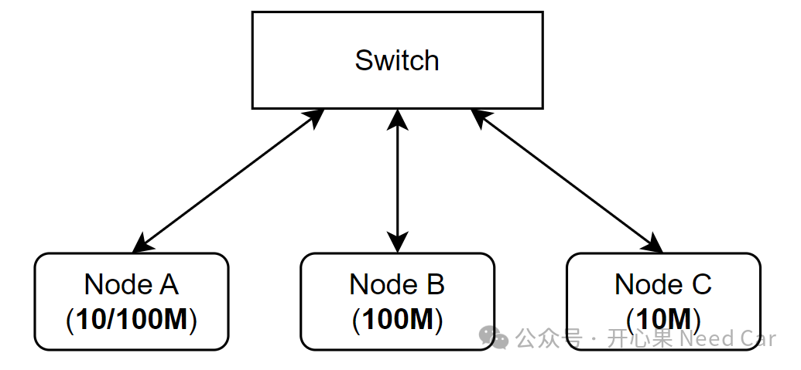
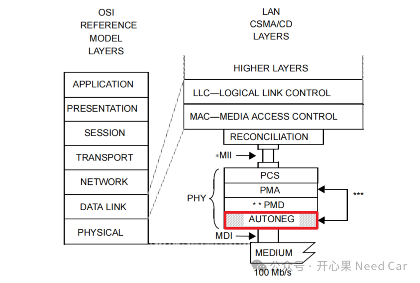
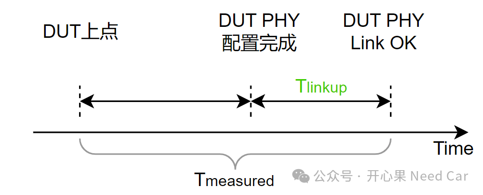
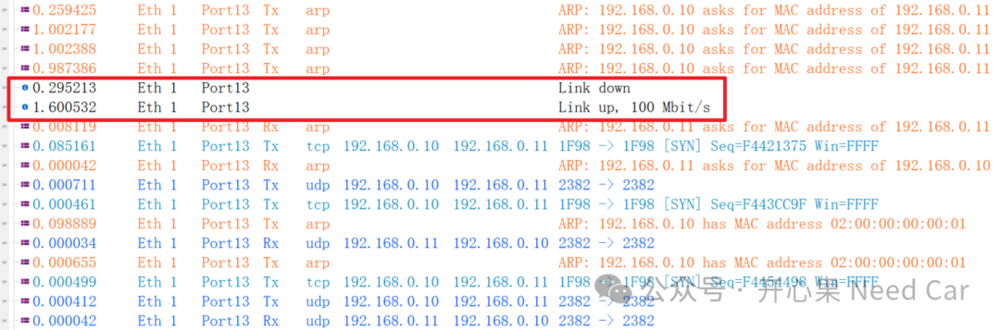
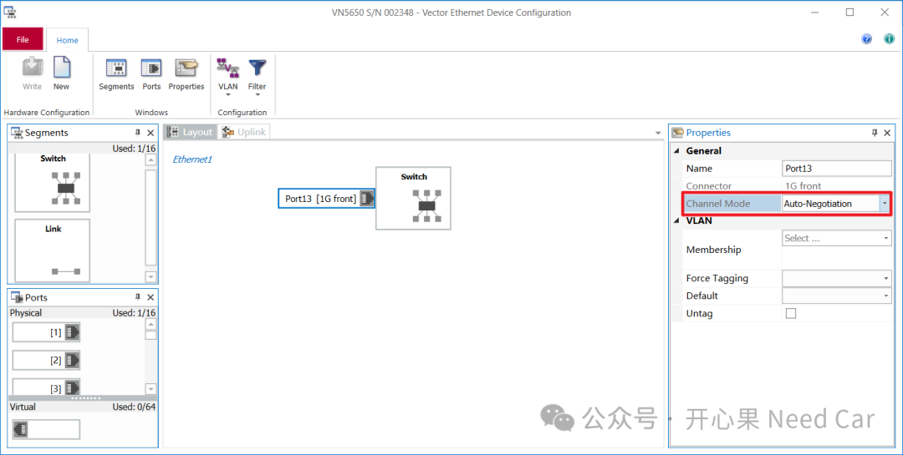
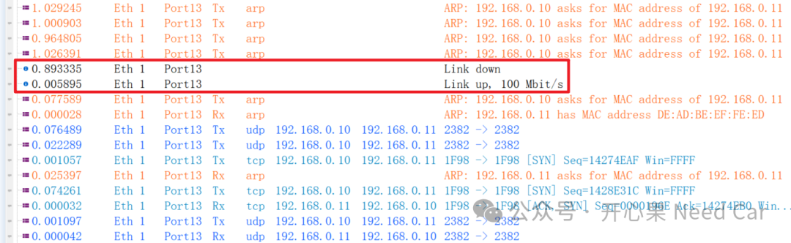
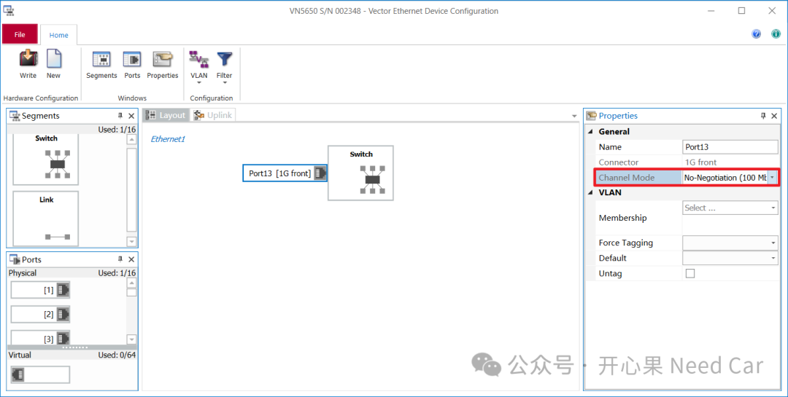

开篇我们聚焦一个问题：以太网通信中，使用Auto-Negotiation（自协商协议）会影响控制器的启动时间吗？先给出本文观点：会。围绕这个问题，本文聊一聊Auto-Negotiation如何影响控制器启动时间的。
1、为什么需要Auto-Negotiation？
最开始的以太网，以太网通信速率只有10M，半双工通信模式。随着以太网技术的迭代，现在的以太网速率可以达到100M、1000M、10G...还可以支持全双工通信。但是，两个以太网节点在通信之前，必须匹配好对应的速率和工作模式，方能有效通信，否则，就是“鸡同鸭讲”，无法有效通信。学习以太网，大家可能玩过开发板，开发板一般使用RJ45，但是，这和我们车辆MCU级的以太网连接有所不同，协议标准也不同，可以参考前文《以太网基础：RJ45如何与车规级以太网Phy连接？》。
比如：节点A支持10M/100M通信速率，节点B仅支持100M的通信速率，节点C仅支持10M的通信速率。所以，节点A可以与节点B通信，也可以和节点C通信。但是，节点B和节点C无法直接通信，示意如下：

（一）Auto-Negotiation工作原理
在很多Phy芯片手册中，大家可能会看到类似这样的一段描述：
什么意思呢？Auto-Negotiation是两种以太网通信节点交互配置信息的方法。通过FLP(Fast Link Pluse，快速链路脉冲)方式，一端发送自身可支持的工作模式(速度/是否支持全双工)给对端，对端收到之后，与自身可支持的工作模式相比较，进而匹配一种最佳的工作方式。
怎么理解最优能力呢？比如：节点A支持10/100/1000M通信速率，节点B支持10/100通信速率，那么，两者将以100M速率通信，以此实现通信速率的最大性能，即：自动协商使得两个通信节点以最大传输速率方式通信。
对于Auto-Negotiation功能解释，可以参考更权威的解释：802.3规范。
（二）Auto-Negotiation功能所在层级
在OSI的七层模型中，Auto-Negotiation（简写AUTONEG）功能在Physical（物理层），更具说，在Phy中配置。一般，Phy芯片中会有对应寄存器配置Auto-Negotiation功能。Auto-Negotiation所在层级如下所示(2)：

既然Auto-Negotiation需要通信双方的"讨论"，那么，这个过程势必需要消耗一定的时间，而这个时间恰恰会影响着控制器的启动时间。
那么，Auto-Negotiation对控制器的启动时间到底有多大影响呢？
2、Auto-Negotiation对Link Up的影响
在以太网TC8的测试中，会有一个Phy芯片Link Up时间测试，示意如下：

所以，在这个测试中，PHY的Link Up时间会制约着控制器的启动性能。本文通过使用Auto-Negotiation和不使用Auto-Negotiation的方式，在CANoe（型号：5650）中测试Link Down到Link Up的时间。
测试步骤：
CANoe中设置模拟节点，发送UDP/TCP报文；
CANoe的模拟节点不断发送ARP报文寻找目标节点；
DUT（Device Under Test）通过调试器进行系统复位；
启动DUT；
观测CANoe Trace窗口中的Link down到Link up时间。
（一）使用Auto-Negotiation的Link Up时间
如下图，使用Auto-Negotiation时，Link Down到Link Up大约用时1.6s，示意如下：


具体Phy连接可以参考前文《基于VN5650 TAP模式监控以太网数据交互》。
（二）不使用Auto-Negotiation的Link Up时间
如下图，不使用Auto-Negotiation时，Link Down到Link Up大约用时6ms，示意如下：


（三）小结
通过对比可以看出，使用Auto-Negotiation将极大的影响控制器的启动时间。所以，在开发中，如果要提高控制器的启动时间，可以关闭Auto-Negotiation功能。如果选择关闭Auto-Negotiation功能，不能单一的关闭一个节点 的Auto-Negotiation功能，需要同时关闭通信双方的Auto-Negotiation功能，并且，通信双方设置相同的工作模式（eg：100M，全双工）。如果通信双方，一个使能Auto-Negotiation功能，一个没有使能Auto-Negotiation功能，两者将不能稳定通信。

参考资料
SIMPLE TITLE
(1)https://baike.baidu.com/item/%E4%BB%A5%E5%A4%AA%E7%BD%91%E8%87%AA%E5%8A%A8%E5%8D%8F%E5%95%86/362467?fr=ge_ala
往期精彩回顾
VSCode实用技巧：local-history及.gitignore
Autosar网络管理：Partial Network基础 之 ERA/EIRA、PNC Gateway